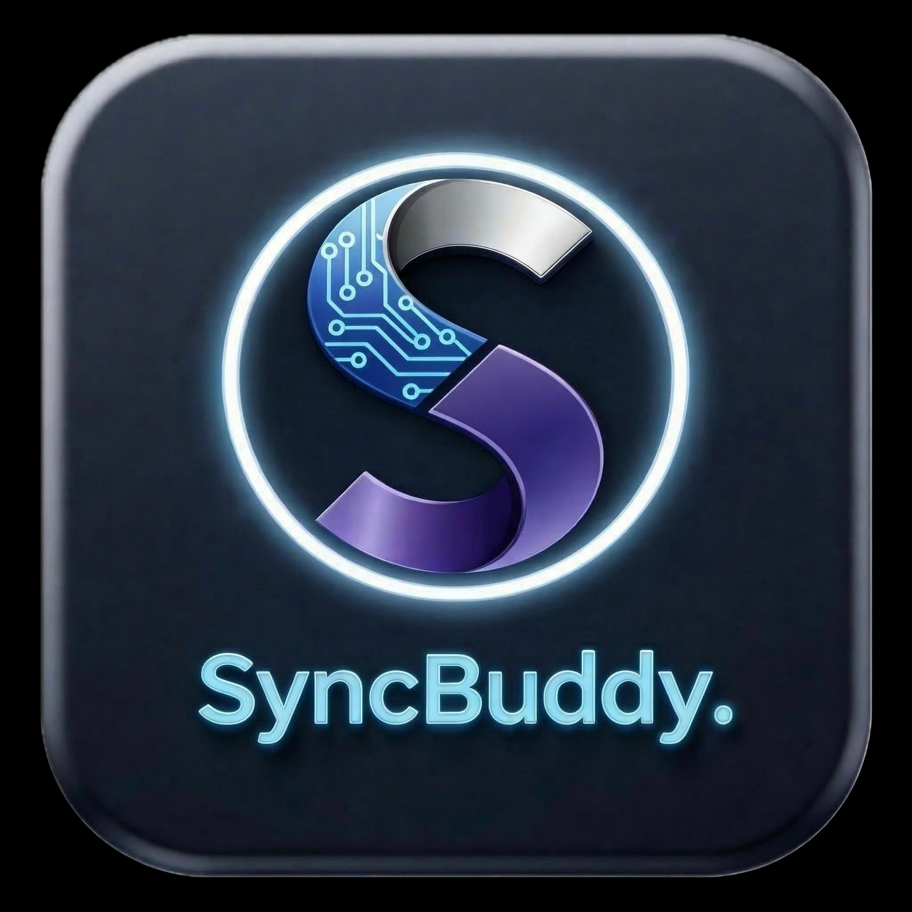

手機瀏覽器打開畫板，無需安裝 App。

SyncBuddy Tech
AI Interactive System Proposal
SyncBuddy Tech
Proposal by SyncBuddy Tech · Present By: Match Fan
AI 互動畫作生命化系統
─ 英華中學 ✕ 南昌站 ─
路人掃描 QR Code 後用手機畫畫，系統經 AI 去底、分析及審核，把作品變成角色、 動態文字、脈搏光效、軌道圖案或能量體，即時投放到大型 LED 屏幕。
判斷作品意圖，選擇活化形態。
過濾不雅內容，批准後才上屏。
作品在大屏幕持續活動，定時淡出。
yingwa-ai.hk/draw
用滑鼠或手指在這裡畫畫
Live Control
AI 處理與後台審核
等待觀眾提交作品
AI 去底抽取筆跡輪廓
選擇角色、文字、光效或能量形態
內容安全檢查
待審核作品
0高峰期模式 · 現場人員點選核准，100% 過濾風險
暫時未有新作品
防 Hang 機
提交進入隊列，同時限制每分鐘提交量及大屏物件數量。
自動消失
每件作品約 3 至 8 分鐘淡出，Demo 以較快速度展示。
內容安全
敏感詞、色情圖像及人手審批，避免不當內容公開播放。
AIGC Highlight Studio
精選作品生成 AI 影片
後台揀選優秀作品，送入 AIGC Video API，生成 5-8 秒 highlight 片段，不影響即時上屏。
Ready · 選作品後可生成精選影片
LED Screen Preview
大型屏幕動態效果
0 Live
0 Approved
Ying Wa AI Wall
Audience drawings come alive · SyncBuddy Tech
Present By: Match Fan
AIGC Highlight
Selected drawings become a cinematic 8s video
Execution Detail
現場運作細節
1. 參加者端
QR Code 開啟手機畫板，支援 iPhone 及 Android。提交前可重畫，提交後進入 AI 處理隊列。
2. 即時動畫引擎
系統先去底及裁走空白邊，再判斷作品類型。角色才會加表情及肢體；文字、符號及抽象圖案會用光效、軌道、粒子或節奏動畫處理。
3. 審核機制
建議現場人員使用後台批准作品。拒絕作品不會上屏，已上屏作品亦可即時刪除。
4. AIGC 精選影片
所有投稿不直接生成影片，避免延遲及成本失控。後台只揀精選作品生成 5-8 秒 AIGC highlight，再排程於大屏播放。